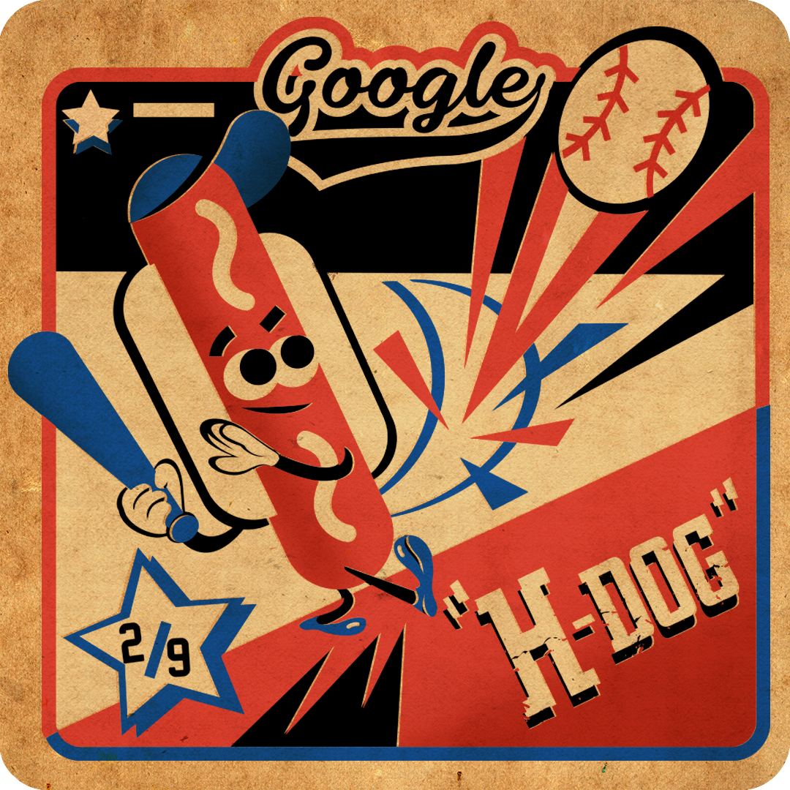
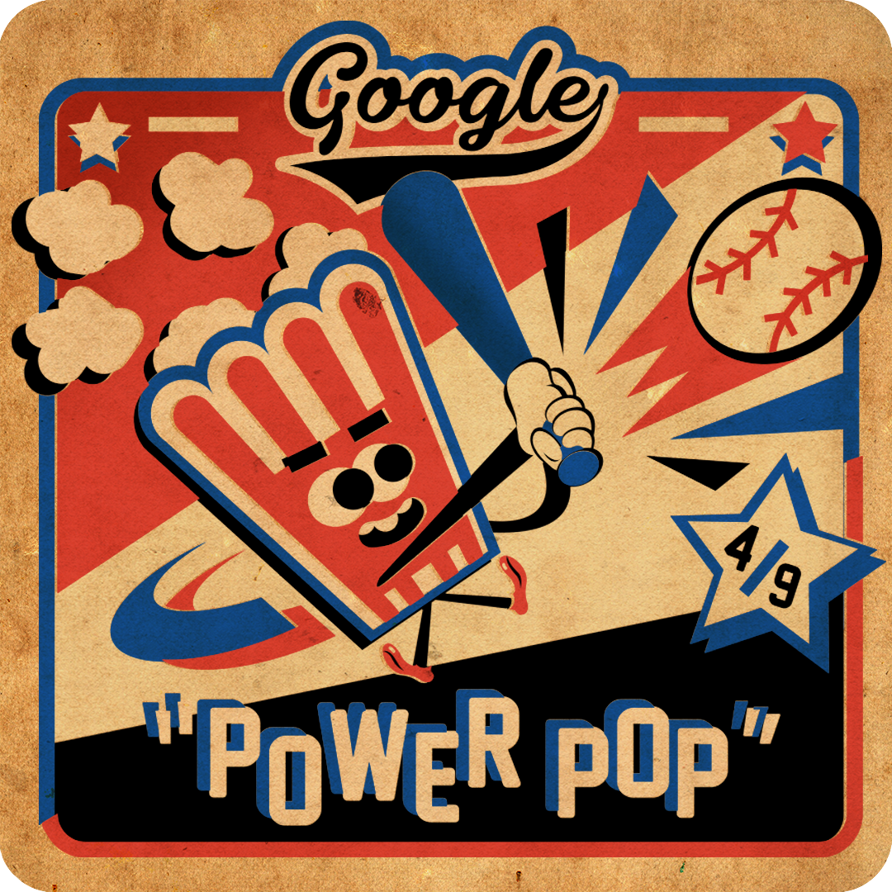
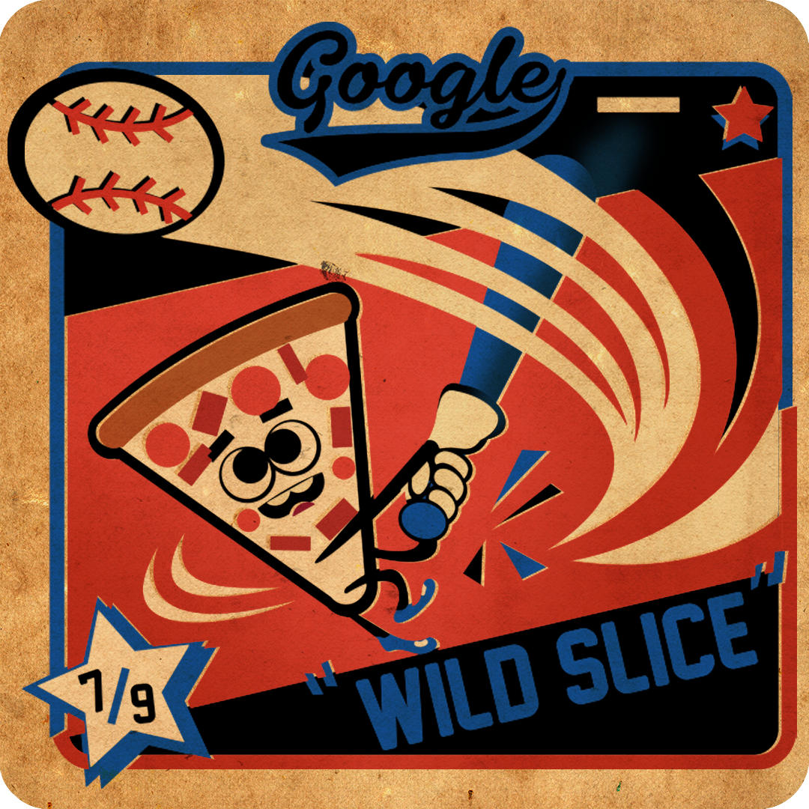
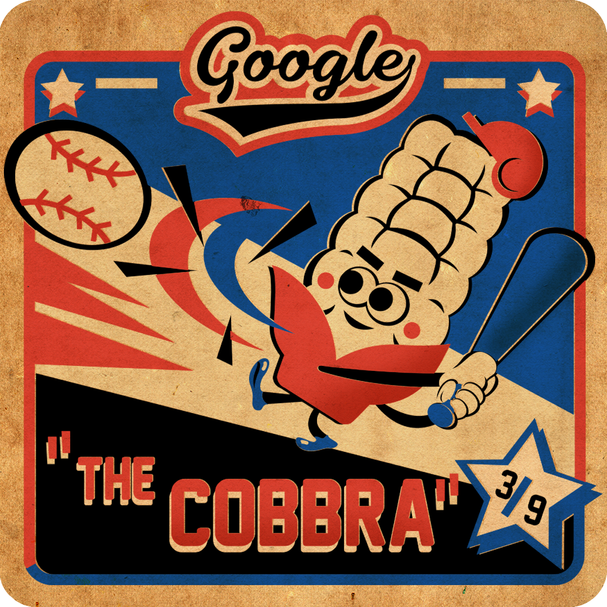
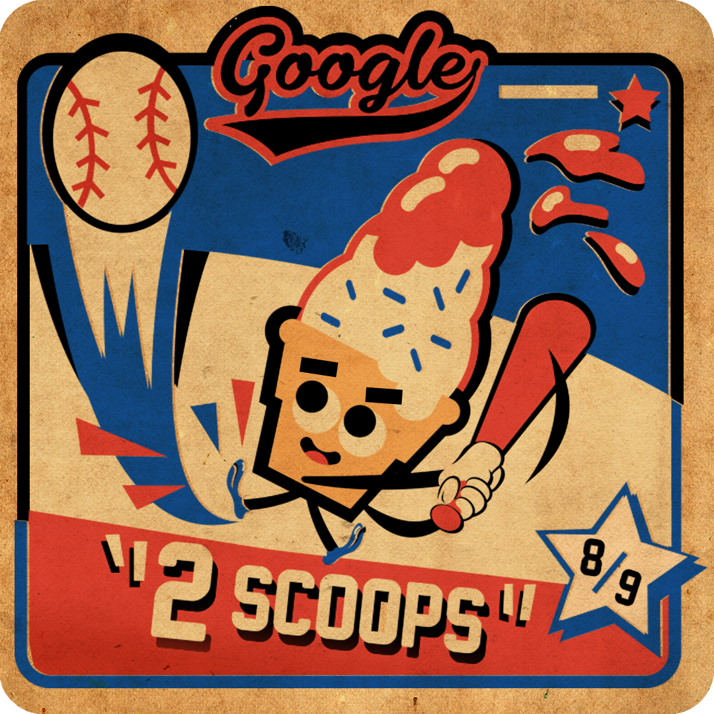
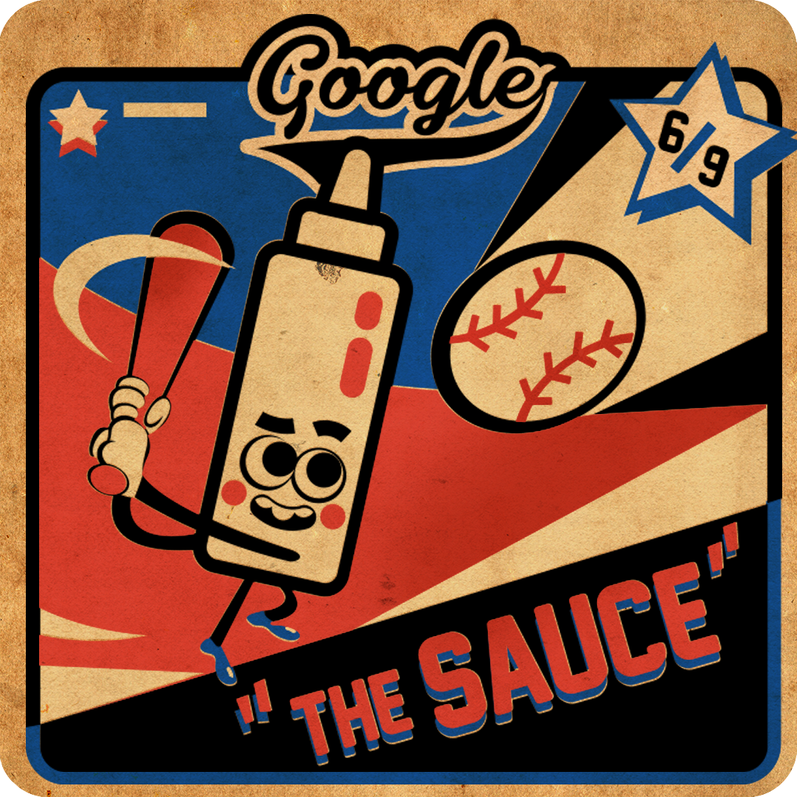
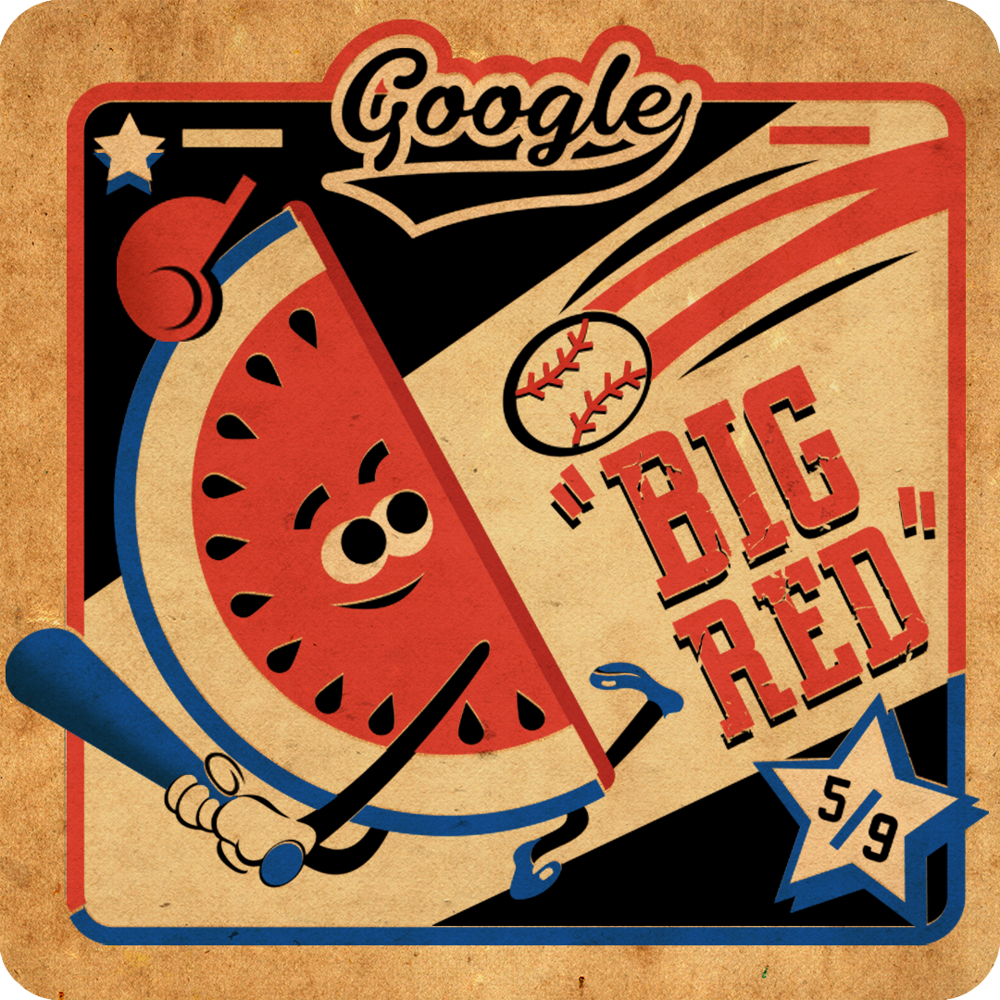
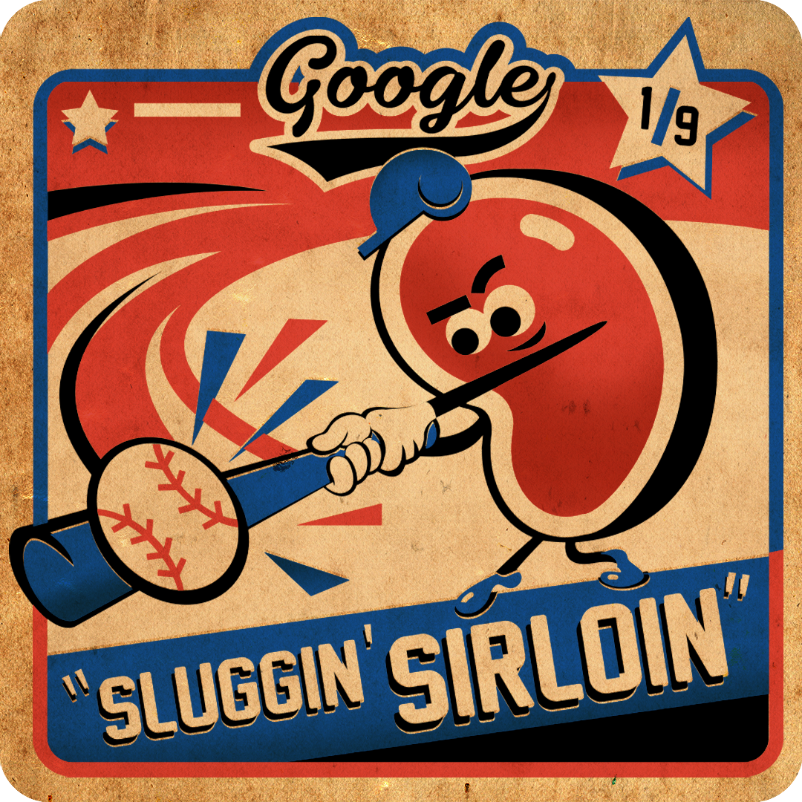
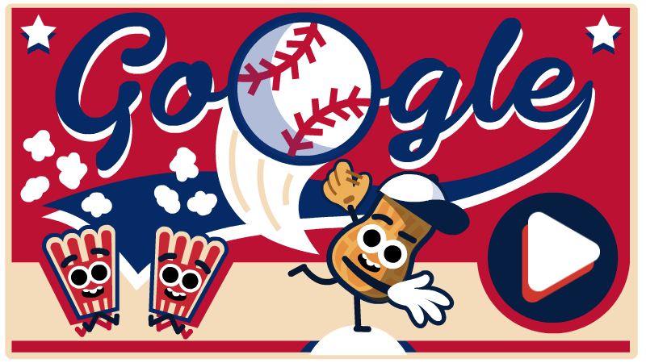
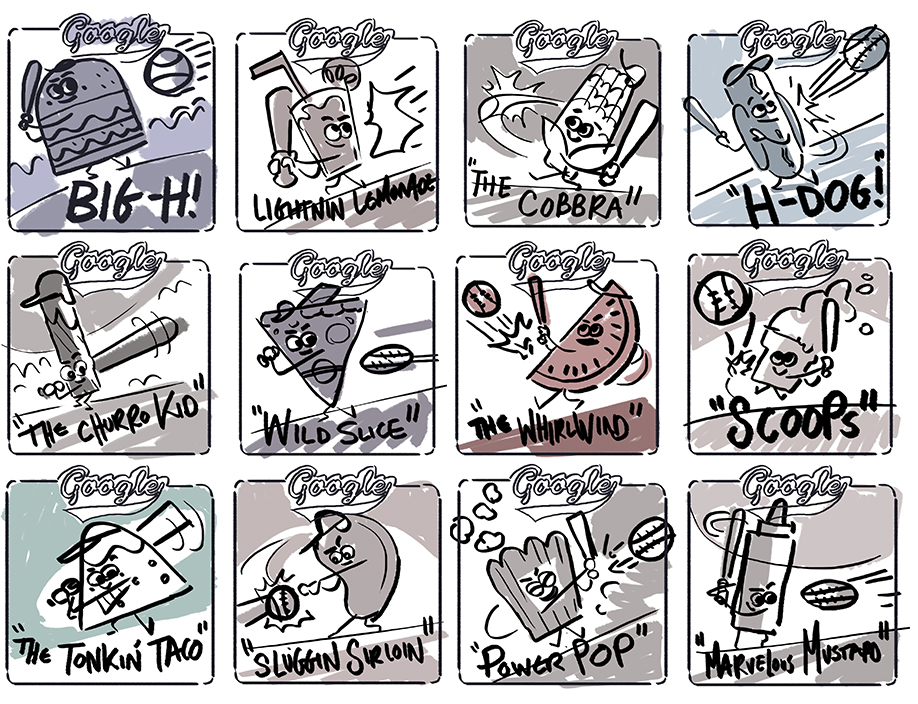

-
July 4, 2019
Fourth of July 2019
Batter up!
Today’s interactive Doodle celebrates U.S. Independence Day with a backyard BBQ ball game—and classic American summertime snacks are stepping up to the plate for a chance to hit it out of the park!
Looks like H-Dog’s on a roll! Lettuce hope he can help his team ketchup! Will Power Pop hit a pop fly? Can Wild Slice slice one into left field? Could Cobbra bat as well as Ty Cob?

 
   
With a lineup like this, things are bound to get a little nuts.

Click to swing, watch the fireworks fly, and let’s play ball! Happy 4th!
Early vintage player card sketches by artist Matt Cruickshank

⚾ Fourth of July 2019 Doodle Credits ⚾
Engineering | Jacob Howcroft, David Lu, Megan Valentine
Art Direction | Matt Cruickshank
Animation | Matt Cruickshank, David Lu, Jacob Howcroft
UX Design | Vishnu Ganti
Producer | Colin Duffy
Marketing | Perla Campos, Grace Chen
Sound | Silas Hite
Business Affairs Lead | Madeline Belliveau
Doodle Team Lead | Jessica Yu
🇺🇸